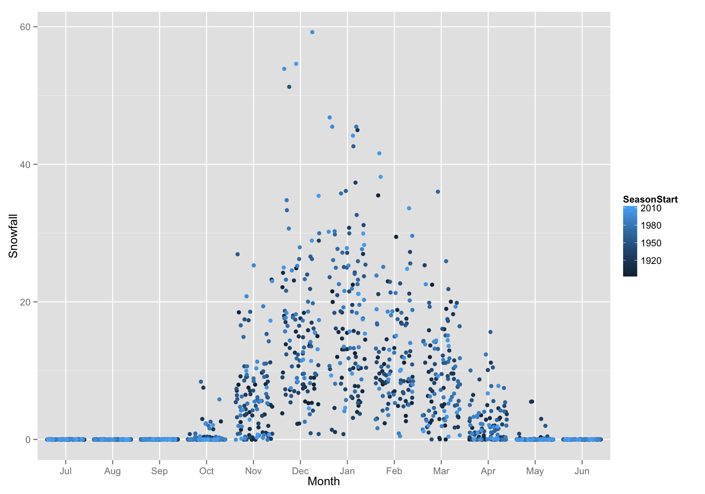

Further fun with ggplot2
Intro
Prerequisites
- To work through the examples you will need a few different packages.
- Please download/install these before coming to class:
install necessary packages:
install.packages(c("ggplot2","lubridate", "plyr", "mosaic", "mosaicData", "reshape2"))Pull the most recent version of the rep-res-course repo just before coming to class.
Goals for this hour:
- Discuss wide vs. long format data, and how ggplot operates on the latter
- Introduce the
reshape2package for converting between wide and long formats - Demonstrate faceting (creating many smaller plots whilst breaking data up over different categories)
- Brief discussion of ggplot’s stats (statistical transformations)
Wide vs Long format
Grand Rapids, MI snow data 1893-2011
- We will explore this using the snowfall data from Grand Rapids, Michigan that is in the
mosaicDatapackage. (thanks to Megan S. for pointing this data set out as a good example!) Here we will print out a small part of it:
library(mosaicData) dim(SnowGR) # how many rows and columns? #> [1] 119 15 head(SnowGR) # have a look at the first few rows #> SeasonStart SeasonEnd Jul Aug Sep Oct Nov Dec Jan Feb Mar Apr May #> 1 1893 1894 0 0 0 0.0 8.0 24.9 12.5 6.8 4.8 2 0 #> 2 1894 1895 0 0 0 0.0 7.5 5.3 21.5 8.0 22.5 0 0 #> 3 1895 1896 0 0 0 0.4 23.2 15.0 NA 8.5 2.0 0 0 #> 4 1896 1897 0 0 0 0.2 8.0 8.0 4.9 11.2 12.0 0 0 #> 5 1897 1898 0 0 0 0.0 1.4 8.0 15.5 29.5 0.0 0 0 #> 6 1898 1899 0 0 0 0.0 18.5 18.0 20.0 3.4 16.0 0 0 #> Jun Total #> 1 0 59.0 #> 2 0 64.8 #> 3 0 49.1 #> 4 0 44.3 #> 5 0 54.4 #> 6 0 75.9- We could think of a few plots we might want to make from this:
- Average snowfall for each month
- Distribution since 1893 of snowfall in each month,
- etc.
- Would be great to explore this with ggplot, but there is one small problem:
- ggplot accepts long format data, and
SnowGRis in wide format.
- ggplot accepts long format data, and
Wide vs. Long, colloquially
- Wide format data is called “wide” because it typically has a lot of columns which stretch widely across the page or your computer screen
- Long format data is called “long” because it typically has fewer columns but preserves all the same information. In order to that, it has to be longer…
- Most of us are familiar with looking at wide format data
- It is convenient if you are doing data entry
- It often lets you see more of the data, at one time, on your screen
- Long format data is typically less familiar to most humans
- It seems awfully hard to get a good look at all (or most) of it
- It seems like it would require more storage on your hard disk
- It seems like it would be harder to enter data in a long format
- if we have been using Microsoft Excel for too long our conceptual model for how to analyze data may never have developed beyond thinking about operating on columns as if each one were a separate entity.
- Which is better?
- Well, there are some contexts where putting things in wide format is computationally efficient because you can treat data in a matrix format and to efficient matrix calculations on it.
- However,
- adding data to wide format data sets is very hard 1.it is very difficult to conceive of analytical schemes that apply generally across all wide-format data sets.
- many tools in R want data in long format
- the long format for data corresponds to the relational model for storing data, which is the model used in most modern data bases like the SQL family of data base systems.
ID variables, Measured variables, Values
- A more technical treatment of wide versus long data requires some terminology:
- Identifier variables are often categorical things that cross-classify observations into categories.
- Measured variables are the names given to properties or characteristics that you can go out and measure.
- Values are the values that you measure are record for any particular measured variable.
- In any particular data set, what you might want to call an Identifier variables versus a Measured variables can not always be entirely clear.
- Other people might choose to define things differently.
- However, to my mind, it is less important to be able to precisely recognize these three entities in every possible situation (where there might be some fuzziness about which is which)
- And it is more important to understand how Identifier variables, Measured variables, and Values interact and behave when we are transforming data between wide and long formats.
Variables and values in SnowGR
- To give this some concreteness, let’s go back to the SnowGR data set.
However, let us drop the “Total” column from it first because that is just computed from the other columns and is not “directly measured”.
Snow <- SnowGR[, -ncol(SnowGR)]- Now, color it up:

- We can think of SeasonStart and SeasonEnd as being Identifier variables. They identify which season we are in.
- The months are the Measured variables, because you go out and measure snow in each month
And the Values occupy most of the table.
Long Format Snow
- When something is in long format, there are columns for values of the Identifier variables and there is one column for the values of the values of the Measured variables and one column for the Values
- This is called a Tidy Data format.
- It looks like this:

- This is the type of data frame that ggplot can deal with.
Reshaping data
- Hadley Wickham’s package
reshape2is perhaps the nicest utility for converting between long and wide format. - Today we will look at the
meltfunction which converts from wide to long format. - When you “melt” a big, wide, block of data, you can stretch it easily into long format.
melttakes a few arguments. The most important are these:- data: the data frame in wide format
- id.vars: character vector of the names of the columns that are the Identifier variables
- NOTE: if this is ommitted, but measure.vars is given, then all the columns that are not in measure.vars are assumed to be id.vars
- measure.vars: The names of the columns that hold the Measured variables .
- NOTE: if this is ommitted, but id.vars is given, then all the columns that are not in id.vars are assumed to be measure.vars
- variable.name: What do you want to call the column of Measured variables in the long (or molten) data frame that you are making?
- value.name: What do you want to call the column of Values in the long format data frame you are making?
Let’s see it in action:
library(reshape2) longSnow <- melt(data = Snow, id.vars = c("SeasonStart", "SeasonEnd"), variable.name = "Month", value.name = "Snowfall" ) head(longSnow) # see what it looks like #> SeasonStart SeasonEnd Month Snowfall #> 1 1893 1894 Jul 0 #> 2 1894 1895 Jul 0 #> 3 1895 1896 Jul 0 #> 4 1896 1897 Jul 0 #> 5 1897 1898 Jul 0 #> 6 1898 1899 Jul 0Note that you have to quote the column names (unlike in ggplot!) ## Plotting some snowfall
We are going to make some plots to underscore some particular points about ggplot
Order of items done via factors
Let’s make simple boxplots summarizing snowfall for each month over all the years. We want Month on the x-axis and we will map Snowfall to the y-axis.
library(ggplot2) g <- ggplot(data = longSnow, mapping = aes(x = Month, y = Snowfall)) g + geom_boxplot() #> Warning: Removed 7 rows containing non-finite values (stat_boxplot).
- Hey! The months came out in the right order. That is cool. Why?
Because, by default,
meltmade a factor of the Month column and ordered the values as they appeared in the data frame:class(longSnow$Month) #> [1] "factor" levels(longSnow$Month) #> [1] "Jul" "Aug" "Sep" "Oct" "Nov" "Dec" "Jan" "Feb" "Mar" "Apr" "May" #> [12] "Jun"
Colors: discrete or continuous gradient?
- When
ggplotapplies colors to things, it uses discrete values if the values of discrete (aka factors or characters) and continuous gradients if they are numeric. We can plot points, coloring them by SeasonStart (which is numeric…) instead of making boxplots
g + geom_point(aes(color = SeasonStart)) #> Warning: Removed 7 rows containing missing values (geom_point).
If we made a factor out of SeasonStart, then each SeasonStart gets it own color (far more than would be reasonable to visualize)
g + geom_point(aes(color = factor(SeasonStart))) #> Warning: Removed 7 rows containing missing values (geom_point).
So that is a little silly.
Dealing with overplotting of points
- Notice that many points are drawn over one another. You can reveal many more points by “jittering” each one.
This is easily achieved with
geom_jitter()instead ofgeom_point()g + geom_jitter(aes(color = SeasonStart)) #> Warning: Removed 7 rows containing missing values (geom_point).
Faceting
- Sometimes it is helpful to break your data into separate subsets (usually on the value of a factor) and make a plot that is a series of smaller plots.
Facet Wrap
Let’s consider looking at a histogram of Snowfall:
d <- ggplot(data = longSnow, aes(x = Snowfall)) + geom_histogram(binwidth = 2, fill = "blue") d
- That is nice, but it might be more interesting to see that month-by-month
We can add a
facet_wrapspecification. We are “faceting in one long strip” but then “wrapping” it to fit on the page:d + facet_wrap(~ Month, ncol = 4)
Facet Grid
- You can also make a rows x column
facet_grid. In fact that is where the~sort of specification comes from. Let’s imagine that we want to look at Nov through Mar snowfall, in the three different, equal-length, periods of years.
# make intervals longSnow$Interval <- cut_interval(longSnow$SeasonStart, n = 3, dig.lab = 4) # here is what they are: levels(longSnow$Interval) #> [1] "[1893,1932]" "(1932,1972]" "(1972,2011]" # get just the months we are interesed in Winter <- droplevels(subset(longSnow, Month %in% c("Nov", "Dec", "Jan", "Feb", "Mar"))) # note the use of droplevels!Now we can plot that with a facet_grid:
w <- ggplot(Winter, aes(x = Snowfall, fill = Interval)) + geom_histogram(binwidth = 2) + facet_grid(Interval ~ Month) w
How about a different kind of plot that is like a continuous boxplot? Just for fun.
y <- ggplot(Winter, aes(x = Month, y = Snowfall, fill = Interval)) y + geom_violin() + facet_wrap(~ Interval, ncol = 1) #> Warning: Removed 2 rows containing non-finite values (stat_ydensity). #> Warning: Removed 2 rows containing non-finite values (stat_ydensity).
ggplot’s statistical transformations
- In order to create boxplots and histograms, ggplot is clearly doing some sort of statistical operations on the data.
- For the histograms it is binning the data
- For the box plots it is computing boxplot statistics (notches, and medians, etc)
- For the violine plots it is computing density statistics.
- Each
geom_xxx()function is associated with a defaultstat_xxxxfunction and vice-versa.
Accessing the outputted values of stat_xxxx() functions
This is not entirely trivial, but can be done by looking at the output of
ggplot_build()boing <- ggplot_build(w) head(boing$data[[1]]) #> fill y count x ndensity ncount density PANEL group ymin ymax xmin #> 1 #F8766D 0 0 -1 0.0000 0.0000 0.0000 1 1 0 0 -2 #> 2 #F8766D 14 14 1 1.0000 1.0000 0.1750 1 1 0 14 0 #> 3 #F8766D 7 7 3 0.5000 0.5000 0.0875 1 1 0 7 2 #> 4 #F8766D 4 4 5 0.2857 0.2857 0.0500 1 1 0 4 4 #> 5 #F8766D 6 6 7 0.4286 0.4286 0.0750 1 1 0 6 6 #> 6 #F8766D 7 7 9 0.5000 0.5000 0.0875 1 1 0 7 8 #> xmax #> 1 0 #> 2 2 #> 3 4 #> 4 6 #> 5 8 #> 6 10This can be a fun exercise to get your head around what sort of data are produced by each of the stats (and there are quite a few of them! http://docs.ggplot2.org/current/ )
comments powered by Disqus